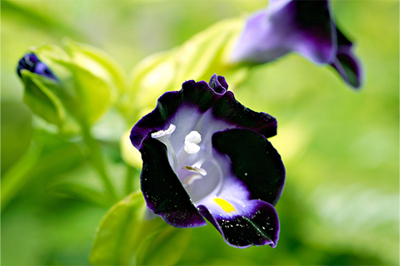
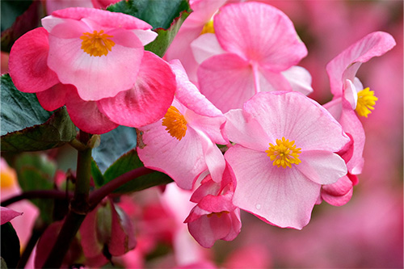

The coleus plant is known for its vibrant, multicolored foliage and thrives in warm, humid climates. It grows well in South Florida because it loves heat, can tolerate partial shade, and adapts easily to the region’s moist soil. Its fast growth and low maintenance make it a popular choice for adding color to gardens and landscapes year-round.

Salvia
Salvia is a hardy, flowering plant that produces bright, tubular blooms that attract pollinators like bees and hummingbirds. It grows well in South Florida thanks to its tolerance for heat, humidity, and sandy, well-drained soil. With its long blooming season and drought resistance, salvia is an excellent choice for low-maintenance, colorful landscapes.

Wax Begonia
Wax begonia is a compact, bushy plant with glossy leaves and delicate flowers in shades of pink, red, or white. It thrives in South Florida’s warm, humid climate and performs well in both sun and partial shade. Its resilience, low water needs, and year-round blooming make it a favorite for borders, containers, and garden beds.